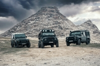

Venham para o clube dos Jipeiros Aventura Fora de Estrada!

Venham participar do maior clube jipeiros Aventura Fora de Estrada!
Você vai se divertir e se aventurar nas trilhas e ter muitas emoções. Explore, Aventure-se, Conquiste!
Um pouco sobre nosso clube de jipeiros Aventura Fora de Estrada
Somos um grupo apaixonado por aventuras fora de estrada e jipes, unidos pela busca de adrenalina e pelo desejo
de explorar os cantos mais remotos e desafiadores da natureza. Se você é um entusiasta de jipes, um aventureiro
de espírito livre e um amante da emoção, você veio ao lugar certo!
Participamos de emocionantes expedições, trilhas desafiadoras, acampamentos sob as estrelas e muito mais. A
cada evento, buscamos a superação de limites e a camaradagem entre os membros.
Agora um play nesse vídeo!
Noticias do clube jipeiros Aventura Fora de Estrada
A terceira etapa do Campeonato Paulista Off-Road-rali de regularidade, foi realizada no último sábado, 18 de
setembro, na cidade de Off-Road(SP), e fez parte dos eventos de comemoração 20 anos do clube Jipe celebrado no
mesmo dia.
A competição teve o apoio da Prefeitura Municipal de Brotas e a concentração aconteceu no Parque da Juventude
Lalala. Juntamente com o promotor de eventos da Núcleo dos Clubes de Jipes de SP, Off-Road, construiu uma pista
de aproximadamente 20 quilômetros exclusivamente para a disputa que, a partir de agora, ficará à disposição de
outros tipos de eventos e treinamentos.